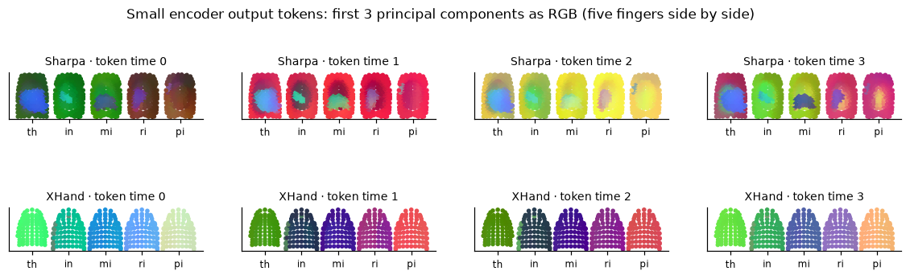
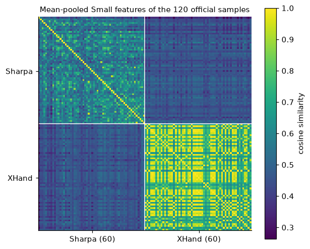
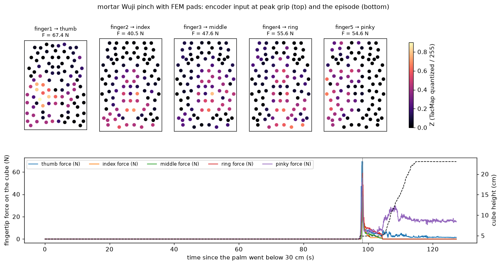

复现 LingBot-Touch：开源权重、接入 mortar 仿真器、仿真强化学习
现状（11-17 晚）：开源权重核对完成；编码器已经接到同事的 mortar 仿真器上（两指夹爪和 Isaac Lab 3 里的五指手），第一轮 probe 做完。 结论分两半：冻结的预训练编码器明显好于结构相同、权重随机的编码器，说明预训练对 mortar 的形变信号有迁移；但在这一轮（读出头训练预算较短）里，它并不比直接在原始信号上训练的小网络好（第三节、第四节）。 按论文预算重跑和“只有少量标签”的对比排在明天。论文表 3 的强化学习对比已经在 Isaac Sim 里搭好：仿真触觉通过了检查（第五节），参照训练和五种触觉输入的训练正在排队跑（第六节）。
实验清单
论文 LingBot-Touch（蚂蚁灵波，2026-11）提出一个跨传感器的触觉编码器：磁、压阻、视触觉三类信号先映射到同一个“标准指尖空间”，再用共享 Transformer 和 JEPA 隐空间预测做预训练；下游策略只在冻结编码器后面接一个可训练的读出层。导读见 Paper Reading Lab。下表是我们做的全部实验，以及它们和论文哪一部分对应。
| 编号 | 实验 | 对应论文 | 状态 |
|---|---|---|---|
| E0 | 开源权重核对：sha256、120 个样例推理、官方单元测试、特征可视化 | 发布的代码与权重 | 完成 |
| E1 | 接入同事的 mortar 仿真器（两指夹爪，FEM 软指尖），在 164 段抓取录制上做 probe，含换物体和少标签两种情况 | 附录 C.1 的做法，换成 mortar | 第一轮完成；论文预算与少标签待跑 |
| E1b | mortar 五指手（Isaac Lab 3 里的捏取任务，五块 FEM 指垫），128 次抓取上的 probe | 同上 | 受力一项完成，其余待跑 |
| E2 | Isaac Sim + TacMap 仿真触觉的搭建与检查，Sharpa 手上的 probe | 附录 C.1、C.3，图 16 | 触觉已搭好，probe 待采数据 |
| E3 | Sharpa 手 in-hand rotation 强化学习，5 种触觉输入 × 3 个种子 | 表 3 中 In-Hand Rotation 一行 | 训练中 |
| E4 | 按论文实现 Tactile-JEPA 预训练，用仿真或公开数据从零训练，再重复前面的测试 | 第 3 节方法 | 最后做 |
一、作者开源了什么，哪些能复现
| 内容 | 是否开源 | 影响 |
|---|---|---|
| 冻结的目标编码器（推理代码，Apache-2.0） | 是 | 可以直接提取特征 |
| Tiny 5.46 M、Small 21.76 M 两个权重 | 是 | sha256 与 Hugging Face 的 LFS 记录一致 |
| 120 个样例输入（Sharpa、XHand 各 30 对，每个 16 帧） | 是 | 只能跑推理，没有标签 |
| 4983 小时预训练数据 | 否 | 无法按原数据重训 |
| 预训练代码（predictor、masking、EMA、数据增强） | 否 | 重训需要按论文自己实现 |
| probe 头、带标签的 probe 数据 | 否 | 真实数据上的 probe 数字（力误差 0.81 N 等）无法重测 |
| 12 个仿真 RL 任务的环境代码 | 否 | 只能用 Sharpa 官方开源的 in-hand rotation 环境重建其中一个 |
| 真机策略（π0.5、LingBot-VLA 等接入代码） | 否 | 需要真机，不在本页范围 |
二、E0：开源权重核对
3 个失败的测试用 torch.equal 要求命令行推理和进程内推理逐位相同；实测相对误差 5×10⁻⁷，来自多线程浮点累加顺序，不是权重或流程的问题。



三、E1：接到同事的 mortar 仿真器上（两指夹爪，软指尖）
能不能接？能。LingBot-Touch 不依赖 Isaac Sim，只需要每根手指一组采样点的位置和每个点的形变量。mortar 的指尖本身就是 FEM 软体，比论文用的“刚体指尖 + 射线测穿透深度”更接近真实的形变。这一节用的是 mortar 抓取实验已有的 164 段录制（立方块 57、杯子 30、茶壶 75、其它 2），每 30 ms 一帧，记录了两根指尖全部 1481 个 FEM 节点的位置，没有改动同事的代码。
- 形变量。去掉手指的整体刚体运动（用离物体表面 8 mm 以外的节点做刚体拟合），剩下的位移投到接触面的法向上，得到每个节点的压入深度（mm）。最大压入深度和夹持力的相关系数 0.999。
- 接触面。指尖是 Fin-ray 结构，内部肋板也朝着对面的手指。只取从对面手指看过去最外层的那个平面（约 122 × 26 mm，129 个节点）。
- 映射到标准指尖空间。把这块接触面沿长、宽方向线性地对到 Sharpa 视触觉 96 点参考布局上；左指放拇指槽，右指放食指槽，其余三指不生成 token。
- 数值。深度用 Sharpa 官方 TacMap 的量化函数换成 0–255（0.5 mm 以内每 0.005 mm 加 1，之后每 0.03 mm 加 1，5.15 mm 饱和），除以 255 放进 Z 通道，和真实 Sharpa 传感器的尺度一致。

怎么判断“有没有用”
做法和论文附录 C.1 相同：编码器冻结，只训练一个注意力读出头（8 个可学习 query + 交叉注意力 + MLP），看能不能从特征里读出物理量。输入是 8 帧（0.24 s）窗口，约 4.9 万个。为了知道读出来的东西是不是预训练带来的，加了三个对照：
| 表示 | 含义 | 它回答的问题 |
|---|---|---|
| LingBot-Touch Tiny / Small（冻结） | 开源权重，不训练 | — |
| 同结构，随机权重冻结 | 同一个网络，权重随机，不训练 | 好结果是来自预训练，还是来自网络结构和读出头？ |
| 同结构，从零训练 | 同一个网络，和读出头一起在这批数据上训练 | 相当于论文里“和策略一起训练的 CNN” |
| 原始信号 + MLP | 不用编码器，三层 MLP 直接读 8 帧原始信号 | 这个任务本身难不难？ |
四个任务里，夹持力和未来 0.24 s 的力变化的标签来自仿真器，独立于输入；接触图和接触中心的标签是从输入信号本身算出来的，考察的只是“编码之后空间信息还在不在”，原始信号在这两项上天然占优。
结果：标签充足时
全部指标的表格（每格依次是三个划分的结果，每个划分内最好的加粗）
| 表示 | 夹持力相对误差 % ↓ | 接触中心误差 mm ↓ | 接触图 Dice ↑ | 接触面积 MAE（百分点） ↓ | 未来力变化 MAE N ↓ |
|---|---|---|---|---|---|
| LingBot-Touch Tiny（冻结） | 10.8 / 12.7 / 37.9 | 0.87 / 1.93 / 1.74 | 0.982 / 0.965 / 0.926 | 0.29 / 0.32 / 0.17 | 0.13 / 0.32 / 0.48 |
| LingBot-Touch Small（冻结） | 9.2 / 25.7 / 32.9 | 0.90 / 1.43 / 1.26 | 0.980 / 0.962 / 0.920 | 0.33 / 0.28 / 0.36 | 0.13 / 0.31 / 0.32 |
| 同结构，从零训练 | 18.1 / 23.4 / 40.3 | 0.91 / 1.63 / 1.66 | 0.974 / 0.965 / 0.925 | 0.32 / 0.23 / 0.20 | 0.14 / 0.31 / 0.32 |
| 同结构，随机权重冻结（对照） | 21.5 / 89.2 / 91.7 | 2.72 / 3.32 / 3.34 | 0.952 / 0.942 / 0.901 | 0.89 / 0.37 / 0.43 | 0.14 / 0.32 / 0.32 |
| 原始信号 + MLP | 6.6 / 21.3 / 28.4 | 0.67 / 1.12 / 1.14 | 0.987 / 0.977 / 0.936 | 0.28 / 0.23 / 0.12 | 0.12 / 0.31 / 0.32 |
未来力变化一栏是全部窗口上的平均误差。“预测不变”基线：0.13 / 0.31 / 0.32 N。五种表示都和这个基线持平：这批录制里力的变化由夹爪的伺服指令决定，从触觉历史里预测不出来，这一项不能用来区分表示的好坏。
结果：换一类没见过的物体
把某一类物体的全部录制留作测试，只在其余物体上训练（各一次）。
留出茶壶（训练：立方块、杯子等 89 段；测试：茶壶 75 段）
| 表示 | 夹持力相对误差 % ↓ | 接触中心误差 mm ↓ | 接触图 Dice ↑ | 接触面积 MAE（百分点） ↓ |
|---|---|---|---|---|
| LingBot-Touch Tiny（冻结） | 85.7 | 4.63 | 0.878 | 0.88 |
| LingBot-Touch Small（冻结） | 87.2 | 6.27 | 0.869 | 1.03 |
| 同结构，从零训练 | 86.8 | 5.88 | 0.861 | 0.75 |
| 同结构，随机权重冻结（对照） | 88.6 | 7.56 | 0.852 | 0.72 |
| 原始信号 + MLP | 86.5 | 10.51 | 0.874 | 0.98 |
留出立方块（训练：茶壶、杯子等 107 段；测试：立方块 57 段）
| 表示 | 夹持力相对误差 % ↓ | 接触中心误差 mm ↓ | 接触图 Dice ↑ | 接触面积 MAE（百分点） ↓ |
|---|---|---|---|---|
| LingBot-Touch Tiny（冻结） | 72.9 | 3.43 | 0.918 | 2.03 |
| LingBot-Touch Small（冻结） | 68.1 | 3.35 | 0.915 | 1.90 |
| 同结构，从零训练 | 40.3 | 3.54 | 0.911 | 2.34 |
| 同结构，随机权重冻结（对照） | 58.3 | 5.32 | 0.898 | 3.01 |
| 原始信号 + MLP | 26.2 | 3.36 | 0.936 | 2.39 |
结果：只有少量有标签数据时
预训练表示通常在标签少的时候才显出优势，这也最接近论文的主张（强化学习里学得更快更稳）。这里把有标签的训练抓取段数从全部减到 2 段，测试集不变。
（运行中，完成后更新）
这一节的结论
- 能接上。编码器只需要采样点位置和每点的形变量，mortar 的 FEM 指尖直接给得出来，不需要改仿真器。
- 预训练对 mortar 的信号有迁移。冻结的开源权重在三个划分上都明显好于结构相同、权重随机的冻结编码器：夹持力相对误差 11–38 % 对 22–92 %，接触中心误差 0.9–1.9 mm 对 2.7–3.3 mm。所以读出来的信息确实来自预训练，不只是来自网络结构或读出头。
- 但标签充足时，它不比“直接在这批数据上训练的小网络”好。三层 MLP 直接读原始信号，夹持力在三个划分里赢两个（6.6 / 21.3 / 28.4 %，Tiny 是 10.8 / 12.7 / 37.9 %），接触图和接触中心全部领先；同结构从零训练的网络和冻结权重大致持平。两根手指、每根 96 个标量，从形变场回归夹持力本身是个容易的问题。
- 换物体时好坏不一。留出茶壶时所有表示的力预测都失败（茶壶的夹持力到 36 N，超出其余物体的范围），接触中心则是冻结权重最好（Tiny 4.6 mm，原始信号 10.5 mm）；留出立方块时冻结权重的力预测反而最差（Tiny 73 %、Small 68 %，原始信号 26 %）。
- 未来力变化谁都预测不了，和“预测不变”持平，这批录制不适合测这一项。
四、E1b：mortar 五指手（Isaac Lab 3 里的捏取任务）
同事已经把 mortar 作为物理后端接进了 Isaac Lab 3，并搭好了五指灵巧手捏立方块的任务，五个指尖各有一块 FEM 软垫（每块 324 个节点）。这一节完全沿用他的环境和任务配置，只加了一个数据采集脚本：回放他录制的一段人工抓取（手掌下降、五指合拢、提起约 23 cm、松开，共 5216 个物理帧），16 个环境并行，每个环境的手掌位置（±10 mm）、偏航角（±8°）和合拢角度（75–100 %）各不相同，一共 128 次抓取，其中 117 次把立方块提了起来。
五根手指正好对应编码器的拇指到小指五个槽位，比两指夹爪更接近论文的设定。每块软垫取外表面的节点，形变量是节点在指尖连杆坐标系里沿内法向的位移，其余处理和上一节相同；标签里的指尖受力来自仿真器的接触力。

全部指标的表格
| 表示 | 夹持力相对误差 % ↓ | 接触中心误差 mm ↓ | 接触图 Dice ↑ | 接触面积 MAE（百分点） ↓ | 未来力变化 MAE N ↓ |
|---|---|---|---|---|---|
| LingBot-Touch Tiny（冻结） | 34.9 / 32.5 / 38.9 | — | 0.821 | 0.19 | — |
| LingBot-Touch Small（冻结） | 39.2 / 35.7 / 45.8 | — | — | — | — |
| 同结构，从零训练 | 52.4 / 55.5 / 96.9 | — | — | — | — |
| 同结构，随机权重冻结（对照） | 71.2 / 66.6 / 68.3 | — | — | — | — |
| 原始信号 + MLP | 24.7 / 23.5 / 26.1 | — | — | — | — |
目前的结果（只有指尖受力一项跑完，其余任务和少标签的对比明天补上）。和两指夹爪的情况一致：原始信号 MLP 最好（相对误差 23.5–26.1 %），冻结的 LingBot Tiny 第二（32.5–38.9 %），明显好于同结构的随机权重（66.6–71.2 %），也好于同结构从零训练（52.4–96.9 %，在这个训练预算下它没有训练好）。五指合拢的瞬间有冲击峰（单指瞬时可到几十牛），所以误差整体比夹爪大。和上一节同样的局限：读出头只训练了 5 个 epoch，按论文预算重跑排在明天。
五、E2：Isaac Sim 里的仿真触觉（论文附录 C.1、C.3）
论文在 Isaac Sim 里用 TacMap 方法生成 Sharpa 手的触觉：指尖表面预设采样点，沿法向量出物体压入弹性体的深度。作者没有开源仿真环境，这里用 Sharpa 官方开源的手模型和传感面数据重建，先做了三项检查，再用它做 probe（本节）和强化学习（下一节）。
| 检查 | 结果 | 说明 |
|---|---|---|
| 传感面和物理碰撞面是不是同一个面 | 偏差中位数 0.02 mm，最大 0.09 mm | Sharpa 发布的指尖传感面点云落在手模型弹性体的碰撞面上，所以“采样点压入物体的深度”就是物理引擎里的穿透量 |
| LingBot 的标准指尖布局配准到传感面 | 四指 RMS 0.23 mm，拇指 0.21 mm | 刚体变换加固定比例（10.5 / 11.75 mm 每单位）；标准空间的 +y 对应指尖远端、+z 对应外法向。远近端反过来的解 RMS 是 0.88 / 0.54 mm，可以排除 |
| 刚性接触下有没有信号 | 平均最大压入 0.02 mm | Sharpa 的 RL 环境默认是刚性接触，握住 50 g 圆柱时几乎没有穿透，量化后约 4 / 255，等于没有触觉 |
| 加柔性接触之后 | 0.16 mm（有接触的手指约 0.6 mm） | 按 Sharpa 官方 TacMap 环境的设置给五个弹性体加柔性接触（刚度 280、阻尼 20）；接触的采样点从 0.7 % 升到 2.5 %，量化后约 0.4。摩擦随机化不影响这个结果（0.15 mm） |
probe 数据要用训练好的策略在这个环境里滚出来（旋转过程中的触觉窗口、每根手指的接触力、更密采样下的接触区域），等下一节的第一批策略训练完就采。论文在自己的仿真数据上报告的数字：接触区域 Dice 0.708，面积 MAE 1.089 个百分点，力 MAE 3.264 N，未来力变化 MAE 0.459 N。
六、E3：Sharpa 手 in-hand rotation 强化学习（论文表 3）
环境。Sharpa 官方开源的 in-hand rotation 任务：右手托住一个圆柱（半径 2 cm、高 3.2 cm、约 50 g），五指配合让它绕竖直轴连续转动。物体质量、质心、摩擦和关节 PD 增益都随机化，并对物体随机施加外力；重力从 0.05 m/s² 开始，掉落率足够低时逐步加到 9.8 m/s²。算法是仓库自带的 PPO。我们把环境从 Isaac Lab 2.3 移植到了 Isaac Lab 3.0，移植后随机抓取的统计（指尖到物体的距离、接触数、回合长度）和原版一致。
为了做论文表 3 的对比，对 Sharpa 原版环境改了三处：
- 五个指尖弹性体改成柔性接触（TacMap 需要穿透量，见上一节）。
- 关掉特权信息。原版策略训练时能直接看到物体位置、质量、摩擦等量，不靠触觉也知道物体在哪；论文的“无触觉”基线只有本体感觉。
- 关掉仓库自带的指尖接触力观测（5 个标量），触觉只通过下面五种配置之一进入策略。
| 配置（论文表 3 的五列） | 进入策略的触觉输入 | 可训练部分 |
|---|---|---|
| 无触觉 | 没有；只有关节角和关节目标（3 帧） | — |
| 二值接触 | 当前帧每个采样点是否压入物体，5 指 × 32 点 = 160 维 | — |
| 原始信号 | 8 帧 × 5 指 × 32 点 = 1280 维，直接拼进策略输入 | — |
| CNN（和策略一起训练） | 同样的 8 帧窗口 | 每根手指沿时间做一维卷积，再合成 64 维特征 |
| LingBot-Touch（冻结） | 8 帧窗口过冻结的 Tiny 编码器，取最新时间块的 160 个 token | 交叉注意力读出层（4 个 query），输出 64 维特征 |
和论文设置的差别。论文的这个任务用 9 种形状、3 种尺寸的物体，这里只有 Sharpa 开源环境自带的一个圆柱；论文每根手指 96 个采样点，这里用 32 个（编码器预训练时支持的三种视触觉布局之一），原因是速度，见下表；论文没有给出环境数、训练步数和读出层结构，这里是我们自己定的。所以成功率的绝对值不能和论文那一行（11.5 / 18.3 / 33.4 / 26.6 / 56.4 %）直接比，能比的是五种输入的先后顺序。
| 速度（一块 RTX PRO 6000，4096 个并行环境） | 实测 | 含义 |
|---|---|---|
| 仿真 + PPO，不带编码器，显卡独占 | 约 3.0 万样本/秒 | 1 亿步约 55 分钟 |
| 同上，两个训练共用一块显卡 | 各约 1.2 万样本/秒 | 合计反而更慢，所以各配置排队逐个训练 |
| 同上，和编码器的 probe 训练共用显卡 | 约 0.12 万样本/秒 | 慢 25 倍，不能混跑 |
| 冻结 Tiny 编码器，每指 32 点（640 个 token / 窗口） | 约 900 窗口/秒（显卡共用时） | 每个控制步要编码 4096 个窗口，它决定了 LingBot 这一路的训练时间；独占时的速度待测 |
| 冻结 Tiny 编码器，每指 96 点（1920 个 token / 窗口） | 约 280 窗口/秒（显卡共用时） | 1 亿步要 4 天以上，所以改用 32 点 |
评测。训练结束后每个策略跑 1024 个回合（每回合 20 s，训练时的随机化保留），成功 = 掉落之前绕轴净转满一圈（论文表 8 的判据），分别在 9.8 m/s² 和训练起始的 0.05 m/s² 重力下测。
训练安排与试跑观察
每个配置 4096 个环境、1 亿步，3 个随机种子，共 15 次训练，在一块显卡上排队逐个跑。在此之前先跑一个参照：完全按 Sharpa 仓库自己的设置（16384 个环境、3 亿步、带特权信息和接触力观测、刚性接触），确认移植后的环境本身能学起来。
第一个试跑（无触觉，种子 0）的情况见下面三张图：策略很快学会让圆柱转起来（约 0.65 rad/s），但每一步有约 1 % 的概率把圆柱顶出允许的高度范围，回合平均只持续 5 秒左右，重力课程一直没有启动（要求每步掉落率低于 0.05 %）。这和预期一致：既没有触觉也没有特权信息时，策略不知道物体在哪。
结果
| 配置 | 种子 | 训练步数（百万） | 训练结束时的重力 m/s² | 成功率 %（9.8 m/s²） | 平均净转圈数（9.8） | 成功率 %（0.05 m/s²） | 平均净转圈数（0.05） |
|---|---|---|---|---|---|---|---|
| 无触觉 | 0 | 30 | 0.05 | … | … | … | … |
多个种子的结果用“/”隔开；“…”表示还在训练或评测。
七、E4：从零重新预训练
预训练数据（4983 小时）和训练代码都没有开源，只能按论文第 3 节自己实现 Tactile-JEPA（掩码隐空间预测、EMA 目标编码器、多层目标），用仿真数据（mortar 的指尖形变、Isaac 里的 TacMap）或公开触觉数据训练，再用前面同样的 probe 和强化学习对比它和官方权重。这一步得到的不是论文数字的严格复现，而是“这个方法在我们自己的数据上成不成立”。排在前面的实验之后做。
八、测试条件
| 代码与权重 | robbyant/lingbot-touch（commit dec8025）；Tiny / Small encoder.pt，sha256 ddb8b435… / f87cdc17… |
| E0 | CPU，PyTorch 2.11，官方 120 个样例 |
| E1 | mortar 抓取录制（两指夹爪 + 软指尖，FEM）；probe 在 RTX PRO 6000 上训练，PyTorch 2.7，AdamW，8 个 epoch；标注效率实验固定 1500 个梯度步 |
| E1b | mortar 作为 Isaac Lab 3.0 的物理后端（Isaac Sim 6.1），五指手捏取任务，物理步长 10 ms，每 3 帧记录一次；probe 每次最多 2 万个训练窗口、5 个 epoch |
| E2 / E3 | Isaac Sim 6.1 + Isaac Lab 3.0（PhysX）；Sharpa 官方 in-hand rotation 环境移植到 Isaac Lab 3.0；触觉用 Warp 实现的 TacMap 采样 |